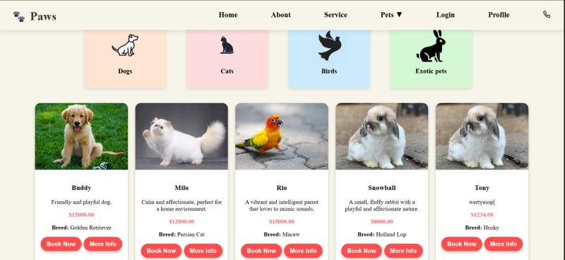
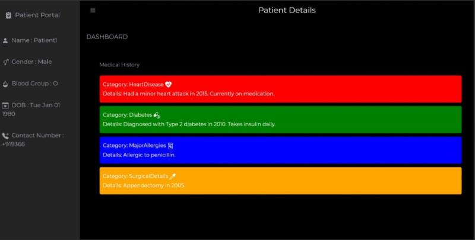
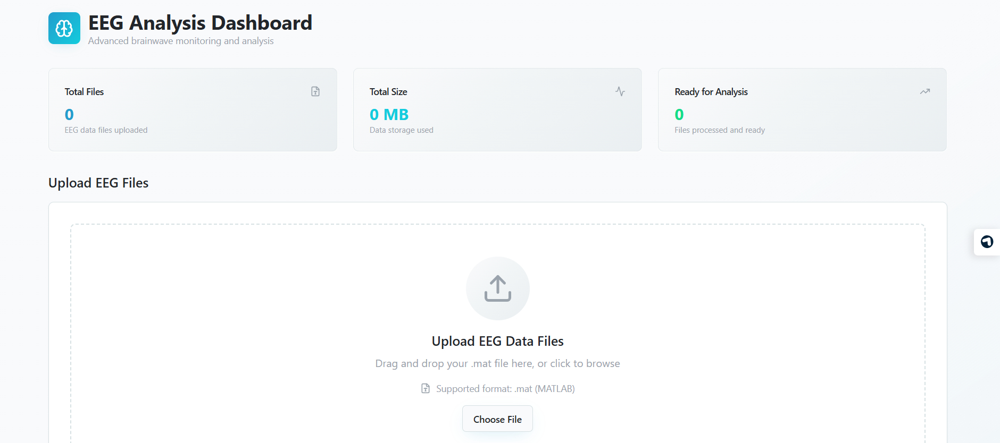
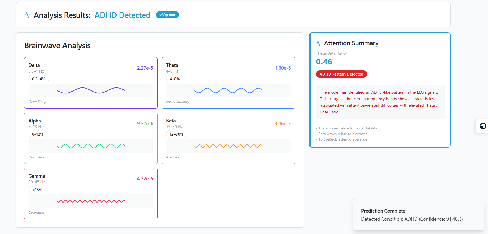

Pet Adoption System
A React and Spring Boot based pet adoption and rehoming platform that connects pet parents with potential adopters. The system streamlines the adoption process with detailed pet profiles, images, and meet-booking capabilities, while also allowing users to rehome pets by submitting their details and photos.
GitHub

Medical Emergency Response System
Built an emergency medical system using biometric fingerprint authentication to provide paramedics instant access to critical patient data. Enabled secure record retrieval, real-time SMS alerts to caretakers, and eliminated manual search delays. Developed using the MERN stack with REST APIs, MongoDB Atlas, and Fast2Sms integration for fast and reliable emergency response.


ADHD Detection System
Developed an ADHD detection system using Convolutional Neural Networks (CNN) with temporal signal processing for effective noise reduction and data cleaning. Integrated Explainable AI (XAI) techniques to interpret model predictions, improving transparency and reducing black-box limitations.